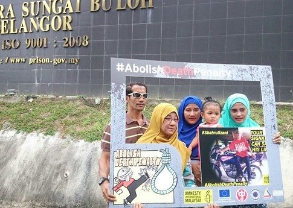
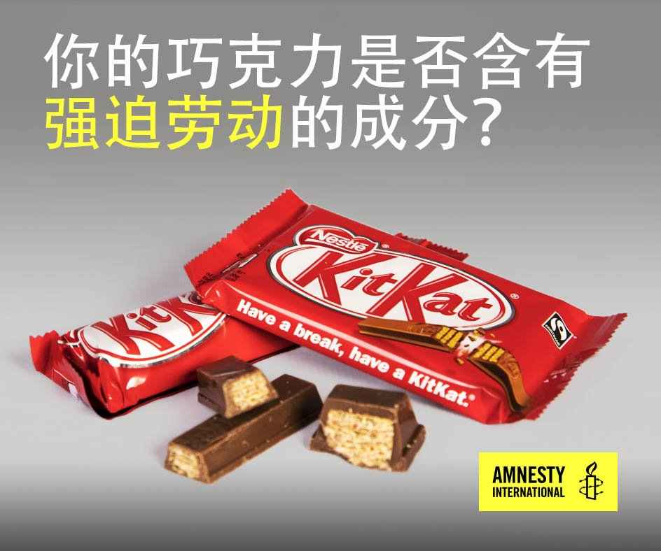
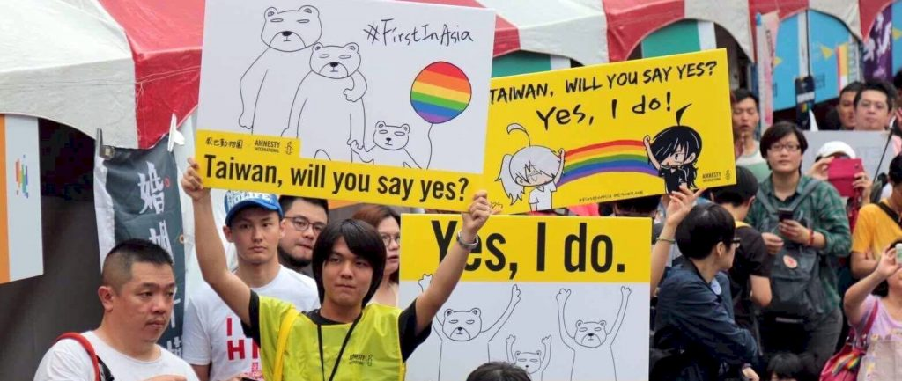

简言之，若非有像你一样的人的支持，我们不可能年复一年地完成这些工作。感谢你们的行动、决心及一如既往的支持，国际特赦组织才能在世界各地改写个人与社群的命运。本文为今年截至目前，你们大家帮助我们完成的工作。
对个人的影响
1. 冈比亚反对派领袖获释
经国际特赦组织支持者3年多的倡导后，冈比亚反对党成员阿玛杜·萨内（Amadou Sanneh）、马朗·法蒂（Malang Fatty）及其兄弟哈吉·桑布·法蒂（Alhagie Sambou Fatty）终于1月30日获释。两天之内，阿玛杜·萨内便宣誓就任冈比亚新政府财政及经济事务部（Finance and Economic Affairs）部长。在前统治者叶海亚·贾梅（Yahya Jammeh）承认选举结果并于1月底放弃权力后，政治僵局得以打破。在那之后，阿玛杜·萨内告诉我们：“国际特赦组织的工作能够给人带来影响。自始至终，他们都不在乎我们。若没有国际特赦组织的声援，情况恐怕更糟。国际特赦组织的工作令他们有所收敛，我对此十分感激。所有入狱者都非常感激国际特赦组织的工作。”
2. 在伊朗挽救生命
感谢成千上万名发推文及向伊朗当局发信呼吁的人，在伊朗，至少两人的生命被挽救。2月15日，伊朗当局在声援者的压力下，于最后一刻叫停了对哈米德·阿马迪（Hamid Ahmadi）的行刑。4月25日，15岁时便被判处死刑的萨拉·沙迪扎迪（Salar Shadizadi）于狱中获释。此前，他已在狱中度过10年，在此期间，世界各地的声援者所采取的迅速行动令他多次被免于处决。
![Hamid Ahmadi is an Iranian juvenile offender on death row. He was first sentenced to death in August 2009 after Branch 11 of the Provincial Criminal Court of Gilan Province convicted him of murder for the fatal stabbing of a young man during a fight between five boys when he was 17. The Supreme Court initially overturned the verdict due to some doubts about the testimony of several key witnesses in November 2009, but ultimately it updheld the verdict in November 2010. Hamid Ahmadi’s trial was unfair, the court relied on confessions that, he says, were obtained under torture and other ill-treatment during the period he was held in a police station, without access to his family and a lawyer. Hamid Ahmadi is now 24 years old and has been re-sentenced to death after he was granted a re-trial in June 2015 after Branch 35 of the Supreme Court.](../../../wp-content/uploads/2017/07/2a-Hamid.jpg)

3. 乌兹别克斯坦被囚时间最长的记者获释
2月22日，穆哈迈德·贝克扎诺夫（Muhammad Bekzhanov）在身陷囹圄17年后获释。他是全世界被囚时间最长的记者之一。他在酷刑之下承认“反国家”控罪，于1999年入狱。在国际特赦组织2015年的“为人权而写”（Write for Rights）运动期间及以外的时间，成千上万人为了他的自由而写。幸亏有这样的国际压力，穆哈迈德终于可以与家人重聚。
![Undated photograph shows Muhammad Bekzhanov with one of his daughters. In 1999, Uzbekistani security forces tortured journalist Muhammad Bekzhanov, editor of a banned opposition newspaper. They beat him with rubber truncheons, suffocated him and gave him electric shocks until he confessed to “anti-state” offences. Even though Uzbekistan has signed up to the UN Convention against Torture which absolutely bans torture and the use of evidence obtained under duress, its courts routinely rely on “confessions” obtained in the most brutal ways imaginable. At trial, a judge dismissed Muhammad’s allegations that he was tortured and used his “confession” to sentence him to 15 years in prison.](../../../wp-content/uploads/2017/07/3-Muhammad-B.jpg)
4. 马来西亚囚犯的死刑被撤销
全世界数千人写信与明信片，敦促马来西亚政府不要处死沙鲁尔·依扎尼·本·苏帕曼（Shahrul Izani Bin Suparman）。这一行动成功了。2月27日，他的刑罚由死刑变更为无期徒刑。马来西亚当局表示，从新西兰到尼日利亚等国寄来的信与明信片说服他们将沙鲁尔从死刑边缘解救出来。在被单独监禁11年后，他亦被转回普通监狱。他原本的刑期将于2030年届满，但如果他进一步申请宽大处理的请求获得接纳，将可能最快于2021年出狱。多亏国际特赦组织遍布全球的支持者，沙鲁尔的家人满怀希望，期待一家团圆的日子快将来临。

5. 切尔西·曼宁获释
1月，被判有期徒刑35年的切尔西·曼宁（Chelsea Manning）获即将卸任的美国总统巴拉克·奥巴马（Barack Obama）减刑，并于5月17日出狱。她因披露包括指向美军可能犯下战争罪的机密情报入狱。在国际特赦组织2015年的“为人权而写”（Write for Rights）标志性写信运动中，逾25万人为让她获释而写。她在当时写给国际特赦组织的信中表示：“我支持你们的工作，保护那些公义、自由、真理和尊严被剥夺的人。在我看来，政府的公开透明是保障和保护所有人的自由与尊严的基本先决条件。”
6. 你的文字改写生命
在2016年的“为人权而写”运动中，国际特赦组织遍布全球的支持者超越了自我。你们共发出了4,660,774封信、电邮、推文及其他形式的信息，这一数字实在令人惊叹。对于此次行动所声援的人来说，这些信息中表达声援的文字让一切变得不一样。父亲伊力哈木·土赫提（Ilham Tohti）仍被中国当局囚禁的菊尔·伊力哈木 （Jewher Ilham）说道：“在看见国际特赦组织收到的所有信件时，我哭了。当我知道有这么多人信任我、我父亲以及我们全家时，我感到更加坚强。”美国的告密者爱德华·斯诺登（Edward Snowden）亦是2016年“为人权而写”运动的主题人物之一，他表示：“我想谦卑并全心全意地向你们致谢，感谢你们坚持不懈的倡导与声援。”
BREAKING: We delivered more than 1 million signatures asking @POTUS to #PardonSnowden! cc: @ACLU @hrw @amnesty @demandprogress @CREDOmobile pic.twitter.com/RS9Kxy07DS
— Stand With Snowden (@StandSnowden) January 13, 2017
![Letters and postcards in support of Edward Snowden. Snowden was a former intelligence officer who served the CIA, NSA, and DIA for nearly a decade as a subject matter expert on technology and cybersecurity. In 2013, he revealed the NSA was unconstitutionally seizing the private records of billions of individuals who had not been suspected of any wrongdoing. When Edward Snowden shared USA intelligence documents with journalists in June 2013, he revealed the shocking extent of global mass surveillance. He showed how governments were secretly hoovering up huge chunks of our personal communications, including private emails, phone locations, web histories and so much more. All without our consent. His courage changed the world. He sparked a global debate, changing laws and helping to protect our privacy. For the first time in 40 years, the USA passed laws to control government surveillance. Globally, technology companies including Apple and WhatsApp are now doing more to protect our personal information. None of this would have happened without Edward Snowden. A former US Attorney General admitted that Snowden’s revelations “performed a public service”. Even President Obama said that this debate about surveillance “will make us stronger”. Edward Snowden is a human rights hero. Yet he faces decades in prison, accused of selling secrets to enemies of the USA. With no guarantee of a fair trial in his home country, he is living in limbo in Russia.](../../../wp-content/uploads/2017/07/6-Snowden.jpg)
令企业承担责任
7. 企业对棕榈油业的人权侵害问题做出回应
在我们就印度尼西亚棕榈种植园内的人权侵害问题发表报告后，全球最大的棕榈油贸易商丰益（Wilmar）公司公布了12个月行动计划，旨在解决这些问题。从丰益公司购买棕榈油的企业，诸如联合利华（Unilever）和宝洁（P&G）较之从前行事更为透明。它们称正采取措施，并直接向丰益公司提出我们的关切。你们针对丰益买家班杰利（Ben & Jerry）公司生产的冰激凌所发的推文使其停止在产品中使用棕榈油，这一情况证明，企业往往无法证明其购买的棕榈油不涉及剥削行径。

8. 科技巨头听取有关钴业童工问题的抗议
全世界成千上万人呼吁科技巨头核实其电话产品是否涉及童工问题，当中包括来自比利时的儿童及加拿大、法国、西班牙以及瑞典的支持者。他们写信、发推、签署请愿书并举行公开抗议活动，敦促苹果（Apple）、三星（Samsung）、华为及其他公司调查其钴供应链中是否存在侵害现象。苹果首先依照国际标准公布了包含其全部钴冶炼厂的名单；索尼（Sony）随即仿效，首次公开了其钴供应链的详情。三星与华为对如潮水般涌向它们的信息大为紧张，分别回复了每位发信人；三星承诺对国际特赦组织所提出的指称展开调查并公开调查结果。

2016年6月，国际特赦组织的支持者在西班牙马德里的苹果商店前开展公众行动。
进行开创性研究
9. 数字分析揭露埃及军方的谎话
4月，国际特赦组织的研究揭示，埃及军方非法杀害至少7名手无寸铁、被其羁押的平民，当中包括一名17岁的少年。我们的研究员分析泄露出来的视频片段，将之与埃及军方公布的照片及Youtube视频进行比对，并访问了埃及西奈（Sinai）的专家，在此基础上做出这一发现。军方声称这些被害者是朝他们开火的“恐怖分子”，但此一言论与我们的发现互相矛盾。
显示埃及西奈发生的枪杀明显属于非法杀害的视频截图。
10. 获奖数字报告
1月，国际特赦组织因就叙利亚赛德纳亚（Saydnaya）酷刑监狱发布互动性数字文献荣获久负盛誉的皮博迪奖（Peabody），以表彰我们在数字报告方面的卓越表现。根据之前被羁押人士的证词，我们的网站首次揭露了这所臭名昭著的军事监狱的情况，数百人被监禁于此并从此消失。
![Sadnaya - Syria detentions - Collaboration with Forensic Architecture. Illustrations taken from the Forensic Architecture Platform. Saydnaya Military Prison is located 30km north of Damascus, Syria. The prison is under the jurisdiction of the Minister of Defence and operated by the Military Police. Saydnaya became notorious for the use of torture and excessive force following a riot by detainees in 2008. There are two buildings on the Saydnaya site, which between them could contain 10,000-20,000 prisoners. In April 2016, Amnesty International and Forensic Architecture travelled to Turkey to meet a group of survivors from Saydnaya prison. Since 2011, journalists and other monitoring groups have been unable to visit the prison and speak with prisoners from Saydnaya, so this was an opportunity to tell their stories. As there are no images of Saydnaya, we were dependent on the memories of survivors to recreate what happened inside. Using architectural and acoustic modelling, we helped witnesses reconstruct the architecture of the prison and their experiences of detention. The interview techniques were developed by Forensic Architecture at Goldsmiths, University of London, in consultation with the university’s Forensic Psychology Unit.](../../../wp-content/uploads/2017/07/10-Saydnaya-1024x615.jpg)
国际特赦组织制作的赛德纳亚司法体系网络平台中展示的叙利亚赛德纳亚军事监狱。
倡导制度性变革
11. 爱尔兰进一步迈向堕胎改革
4月，我们在爱尔兰取得里程碑式的成果，该国朝在更广范围内允许堕胎再进一步。在世界各地，成千上万人参与了我们2015年的“她不是罪犯”（She is #notacriminal）运动。在爱尔兰，寻求堕胎或提供此服务会被入罪，而以上运动则让普通民众对于在该国终止将上述行为定为犯罪的呼声更加全球化。亦在4月，在政府设立、由99名随机选择的公民组成的公民代表大会（Citizen’s Assembly）上，约三分之二的成员投票支持一经要求便准许堕胎，其就堕胎改革提出的建议将提交国会。这一投票结果印证了国际特赦组织爱尔兰分会近期委托进行的民意调查，结果显示，80%的爱尔兰民众希望对该国堕胎法的任何修改均以妇女健康为核心。
12. 台湾朝婚姻平权更进一步
5月，台湾的最高司法机关公布了认可婚姻平权的决定，使台湾有可能成为亚洲第一个同性婚姻合法化的地方。全球40个国家的国际特赦组织支持者发出求婚式的讯息，敦促台湾“说好”。这些讯息在国际特赦组织台湾分会同我们在当地的合作伙伴所组织的大型集会上展示，显示全球对这一或将成为当地历史性进展的决定的支持。台湾政府有两年时间，制定婚姻平权的法律。我们将于今年夏天开展进一步的倡导活动，以确保此法尽快出台。

2017年5月，青年人为台湾婚姻平权举行集会。